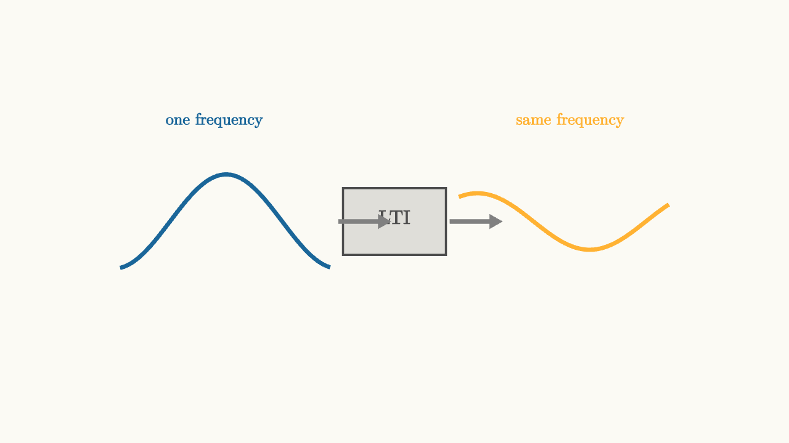

Complex Exponentials Are LTI Eigenfunctions
A circuit with memory can do many things to a signal. It can delay it, blur it, ring after it, and mix old input with new input. That sounds messy until you feed it a very special signal.
For a linear time-invariant system, the special signal is the complex exponential:
It comes out at the same frequency. The circuit is allowed to scale it and rotate its phase, but the time pattern remains an exponential at angular frequency $\omega$.

source
background = [0.985, 0.98, 0.955, 1]
camera = Camera(4.6b)
mesh diagram = block {
. stroke{BLUE, 4} ExplicitFunc(|t| 0.55 * sin(2.4 * t), [-3.2, -0.75, 180])
. fill{alpha{0.16} DARK_GRAY} stroke{DARK_GRAY, 2} center{[0, 0, 0]} Rect([1.2, 0.78])
. center{[0, 0.05, 0]} color{DARK_GRAY} Text("LTI", 0.82)
. color{GRAY} Arrow(start: [-0.65, 0, 0], end: [-0.05, 0, 0])
. color{GRAY} Arrow(start: [0.65, 0, 0], end: [1.25, 0, 0])
. stroke{ORANGE, 4} ExplicitFunc(|t| 0.33 * sin(2.4 * t - 0.75), [0.75, 3.2, 180])
. center{[-2.1, 1.18, 0]} color{BLUE} Text("one frequency", 0.68)
. center{[2.05, 1.18, 0]} color{ORANGE} Text("same frequency", 0.68)
}
"same frequency"
play Fade(0.6)This is the circuit version of a familiar linear algebra idea. A matrix usually turns a vector into a different direction. An eigenvector keeps its direction and only changes by a scalar factor. An LTI system usually turns a signal into a new waveform. A complex exponential keeps its frequency and changes by a complex scalar.
That scalar is the frequency response:
Its magnitude tells how much the circuit changes the amplitude. Its angle tells how much phase lag or phase lead it creates.
Why the exponential keeps its shape
Start with convolution:
Now choose $x(t)=e^{j\omega t}$. The delayed input is
Split the part that depends on $t$ from the part that depends on the delay:
Put that into convolution:
The integral is a number for each frequency. It is exactly $H(j\omega)$. Therefore
The output keeps the same exponential. The circuit only contributes the multiplier $H(j\omega)$.
source
param omega = 1.5
background = [0.985, 0.98, 0.955, 1]
camera = Camera(4.8b)
let InputWave = |omega, col| block {
. stroke{col, 4} ExplicitFunc(|t| 0.62 * sin(omega * t), [-3.1, 3.1, 240])
}
let OutputWave = |omega, gain, phase, col| block {
. stroke{col, 4} ExplicitFunc(|t| gain * 0.62 * sin(omega * t + phase), [-3.1, 3.1, 240])
}
let PhasorFromOmega = |omega, offset, length, col| center{[0, -0.78, 0]} block {
let angle = 0.4 * omega + offset
. stroke{LIGHT_GRAY, 2} Circle(0.82)
. color{col} Arrow(start: [0, 0, 0], end: [length * cos(angle), length * sin(angle), 0])
}
"input"
mesh title = center{[0, 1.65, 0]} color{DARK_GRAY} Text("change frequency, keep the pattern", 0.62)
mesh wave = InputWave(omega: $omega, col: BLUE)
mesh phasor = PhasorFromOmega(omega: $omega, offset: 0, length: 0.82, col: BLUE)
mesh note = center{[0, -1.75, 0]} color{DARK_GRAY} Text("input exponential", 0.62)
play Write(0.9)
play Grow(0.6)
"through the circuit"
wave = OutputWave(omega: $omega, gain: 0.58, phase: -0.72, col: ORANGE)
phasor = PhasorFromOmega(omega: $omega, offset: -0.72, length: 0.48, col: ORANGE)
note = center{[0, -1.75, 0]} color{DARK_GRAY} Text("output is scaled and phase shifted", 0.62)
play Lerp(1.2)
"sweep frequency"
omega = 3.1
wave = OutputWave(omega: $omega, gain: 0.35, phase: -1.12, col: GREEN)
phasor = PhasorFromOmega(omega: $omega, offset: -1.12, length: 0.32, col: GREEN)
note = center{[0, -1.75, 0]} color{DARK_GRAY} Text("the multiplier depends on omega", 0.62)
play Lerp(1.3)The parameter in the slideshow is doing real work. Dragging $\omega$ changes the frequency, while the output still has the same frequency as the input. The visual question becomes: how much shorter is the wave, and how far has it shifted?
Why this is useful for circuits
Circuit equations often contain derivatives. Complex exponentials make derivatives simple:
For a capacitor,
If $v(t)=e^{j\omega t}$, then
The derivative became multiplication by $j\omega$. This is the phasor idea in one line. A sinusoid at one frequency can be represented by a rotating complex number, and circuit laws become algebra at that frequency.
For the RC low-pass circuit,
Try $x(t)=e^{j\omega t}$ and $y(t)=H(j\omega)e^{j\omega t}$. The equation becomes
Cancel the shared exponential:
One formula now tells the amplitude and phase response for every sinusoidal input.
Real sinusoids are the visible part
Physical voltages and currents are real. The complex exponential is a calculation tool. A cosine is the real part of a complex exponential:
Because the system is linear with real circuit values, we can compute with the complex exponential and take the real part at the end. The answer is a sinusoid at the same frequency, scaled by $|H(j\omega)|$ and shifted by $\angle H(j\omega)$.
This is why frequency response is more than a plotting trick. It is an eigenvalue map. Each frequency is a direction the circuit understands cleanly. The next lesson draws that map and reads it as a circuit's personality.